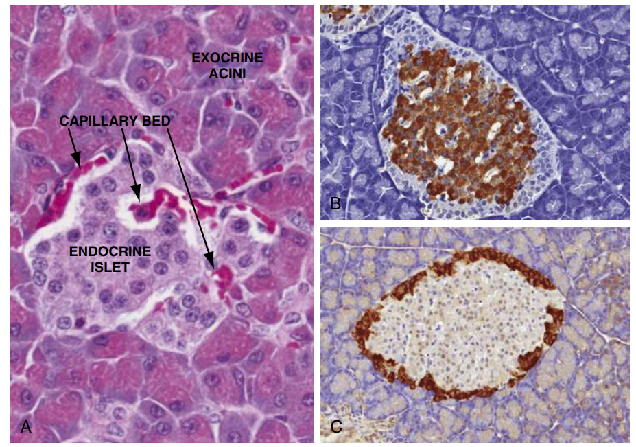
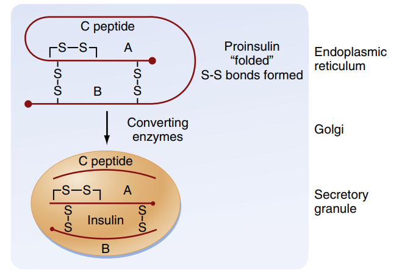
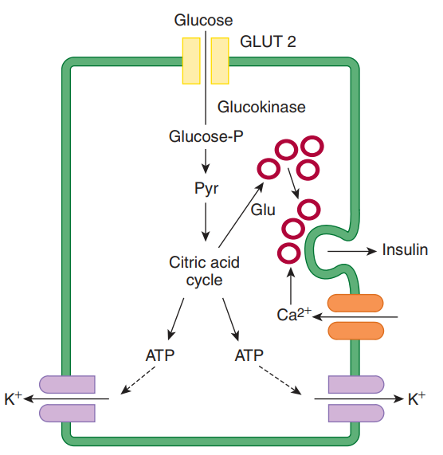
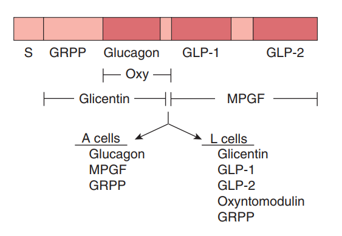
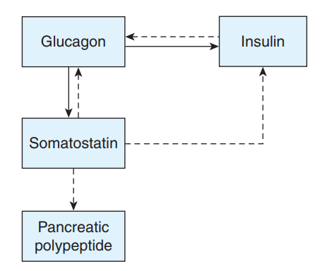

Sinh lý học Tuyến tụy nội tiết
Hệ thống hóa cấu trúc mô học đảo Langerhans, con đường sinh tổng hợp và cơ chế bài tiết insulin/glucagon, cơ chế truyền tin nội bào qua thụ thể tyrosine kinase và các mối liên hệ lâm sàng quan trọng.
Tuyến tụy là một cơ quan hỗn hợp đặc biệt trong hệ thống tiêu hóa và nội tiết. Trong khi phần lớn thể tích tuyến tụy thực hiện chức năng ngoại tiết (bài tiết các men tiêu hóa), phần nội tiết được đảm nhiệm bởi các cụm tế bào biệt hóa nhỏ gọi là đảo Langerhans (Islets of Langerhans). Tuy chỉ chiếm 1-2% khối lượng tuyến tụy, các đảo này nhận được lượng máu nuôi dưỡng vô cùng phong phú, giải phóng các hormon kiểm soát trực tiếp toàn bộ trạng thái chuyển hóa nhiên liệu của cơ thể.
Phần I: Cấu Trúc Đảo Tụy (Islets of Langerhans)
Đảo Langerhans là các đơn vị chức năng nội tiết phân bố rải rác trong nhu mô tụy ngoại tiết, tập trung nhiều nhất ở vùng đuôi tụy. Có khoảng 1 đến 2 triệu đảo tụy ở người trưởng thành. Toàn bộ dòng máu từ các đảo tụy sẽ được dẫn lưu trực tiếp vào tĩnh mạch cửa để đi thẳng về gan, giúp gan tiếp xúc với nồng độ hormon giáp (đặc biệt là insulin và glucagon) cao nhất.
Mỗi đảo tụy chứa ít nhất 4 loại tế bào bài tiết hormon chuyên biệt, phân bố theo vùng chức năng rõ rệt:
Chiếm tỷ lệ lớn nhất (60 - 75% tổng số tế bào đảo tụy), nằm tập trung ở vùng trung tâm đảo. Tế bào Beta có nhiệm vụ tổng hợp, dự trữ và bài tiết hormon đồng hóa quan trọng nhất cơ thể: Insulin (cùng với C-peptide và amylin).
Chiếm khoảng 20% số tế bào, phân bố chủ yếu ở vùng ngoại vi của đảo tụy, bao quanh lõi tế bào Beta. Tế bào Alpha bài tiết hormon dị hóa Glucagon, có tác dụng đối kháng trực tiếp với Insulin.
Chiếm khoảng 5 - 10%, nằm rải rác ở vùng ngoại vi đảo. Tế bào Delta bài tiết hormon peptide **Somatostatin**, đóng vai trò điều hòa cận tiết (paracrine) tại chỗ đối với hoạt động của tế bào Alpha và Beta lân cận.
Chiếm tỷ lệ nhỏ (< 2%), nằm rải rác chủ yếu ở các đảo tụy thuộc phần sau của đầu tụy. Tế bào F bài tiết **Pancreatic Polypeptide (PP)**, có tác dụng điều hòa quá trình hấp thu thức ăn và hoạt động bài tiết mật, dịch tụy ngoại tiết.

Phần II: Sinh Lý Hormon Insulin
Insulin là hormon protein đồng hóa (anabolic hormone) duy nhất của cơ thể làm giảm nồng độ glucose máu, kích thích tích lũy năng lượng dưới dạng glycogen, lipid và protein.
1. Quá trình Sinh tổng hợp và Chuyển hóa
Phân tử insulin trưởng thành gồm hai chuỗi polypeptide: chuỗi A (21 acid amin) và chuỗi B (30 acid amin), liên kết với nhau bằng hai cầu nối disulfide liên chuỗi và một cầu nối nội chuỗi A. Quá trình tổng hợp diễn ra qua các bước:
-
Dịch mã tạo Preproinsulin
Gen insulin nằm trên nhiễm sắc thể 11 mã hóa một chuỗi tiền chất lớn gọi là preproinsulin (chứa signal peptide dẫn đường) được tổng hợp tại lưới nội chất hạt của tế bào Beta.
-
Cắt signal peptide tạo Proinsulin
Khi đi vào lòng lưới nội chất, signal peptide bị cắt bỏ nhanh chóng tạo thành chuỗi proinsulin. Phân tử proinsulin tự gấp cuộn lại để thiết lập đúng các cầu nối disulfide giữa các gốc cysteine.
-
Đóng gói và phân cắt trong hạt tiết
Proinsulin được vận chuyển đến bộ máy Golgi và đóng gói vào các túi tiết (secretory granules). Trong các túi này, các enzyme prohormone convertase (PC1/3 và PC2) cùng men carboxypeptidase E tiến hành cắt đứt chuỗi peptide liên kết ở giữa gọi là **C-peptide (Connecting peptide)** ra khỏi proinsulin.
-
Xuất bào đồng phân tử (Equimolar)
Kết quả là hạt tiết chứa phân tử Insulin hoàn chỉnh liên kết với kẽm tạo dạng tinh thể hexamer, và các chuỗi C-peptide tự do. Khi xuất bào, Insulin và C-peptide được giải phóng vào tuần hoàn với **tỷ lệ phân tử 1:1**.
Đặc tính chuyển hóa: Insulin tự do trong máu có thời gian bán hủy cực ngắn (khoảng 5 phút). Khi đi qua gan lần đầu tiên qua tĩnh mạch cửa, khoảng 50% lượng insulin bị phân hủy ngay bởi enzyme **IDE (Insulin-Degrading Enzyme)**. Ngược lại, C-peptide có thời gian bán hủy dài hơn (khoảng 30 phút) và không bị gan phân hủy, do đó được ứng dụng làm chỉ số phản ánh trung thực chức năng tiết insulin nội sinh của tế bào Beta trên lâm sàng.

2. Thụ thể và Cơ chế tác động tế bào
Thụ thể của insulin (Insulin Receptor - IR) là một glycoprotein xuyên màng thuộc nhóm
thụ thể **Tyrosine Kinase** hoạt động dưới dạng tetramer gồm:
• Hai tiểu đơn vị $\alpha$ nằm hoàn toàn ở phía ngoại bào, chứa vị trí gắn đặc hiệu
với phân tử insulin.
• Hai tiểu đơn vị $\beta$ xuyên màng, phần nội bào chứa các gốc tyrosine có hoạt
tính enzyme tyrosine kinase.
Cơ chế truyền tin nội bào:
- Insulin gắn vào tiểu đơn vị $\alpha$ $\rightarrow$ làm thay đổi cấu hình thụ thể $\rightarrow$ kích hoạt tyrosine kinase ở phần nội bào tiểu đơn vị $\beta$ tự phosphoryl hóa chéo các gốc tyrosine của nhau.
- Tiểu đơn vị $\beta$ đã phosphoryl hóa sẽ tiếp tục phosphoryl hóa các protein giá đỡ nội bào gọi là **IRS (Insulin Receptor Substrates 1-4)**.
- IRS đã hoạt hóa kích hoạt con đường **PI3K (Phosphatidylinositol 3-kinase)** $\rightarrow$ hoạt hóa **Akt kinase (Protein Kinase B)**.
- Akt kinase kích thích sự chuyển vị (translocation) của các túi nội bào chứa kênh vận chuyển glucose **GLUT 4** tiến ra hòa màng với màng tế bào. Hiện tượng này làm tăng tốc độ hấp thu glucose vào tế bào lên gấp 10-40 lần, xảy ra chủ yếu ở **cơ xương** và **mô mỡ** (các mô phụ thuộc insulin). Các tế bào gan, não, hồng cầu hấp thu glucose không phụ thuộc insulin (sử dụng GLUT 1, 2, 3).
3. Tác dụng sinh lý của Insulin
Tác dụng tổng thể của insulin là tăng cường các con đường đồng hóa tích lũy năng lượng và ức chế các con đường dị hóa thoái hóa cơ chất:
• Tăng thu nhận glucose ở cơ xương và mô mỡ thông qua việc huy động kênh
GLUT 4 lên bề mặt màng tế bào.
• Tại Gan: kích thích enzyme glucokinase để phosphoryl hóa bẫy
glucose bên trong tế bào dưới dạng G-6-P. Kích thích enzyme glycogen synthase
tăng tổng hợp **glycogen** dự trữ.
• Ức chế các enzyme chìa khóa của con đường tân sinh glucose (gluconeogenesis)
và phân giải glycogen ở gan.
• Tăng tổng hợp acid béo và triglyceride tại mô mỡ và gan.
• Tăng hoạt tính enzyme Lipoprotein Lipase (LPL) ở thành mao mạch mô mỡ để giải
phóng acid béo từ chylomicron và VLDL đưa vào tế bào mỡ.
• **Ức chế mạnh mẽ enzyme HSL (Hormone-Sensitive Lipase)** nội bào, qua đó ngăn
chặn phản ứng thủy phân triglyceride thành acid béo tự do. Đây là tác dụng cực
kỳ quan trọng ngăn ngừa sự tạo thể ceton quá mức.
• Kích thích vận chuyển chủ động các acid amin từ máu vào trong tế bào (đặc biệt
là cơ xương).
• Tăng cường hoạt động dịch mã của ribosome thúc đẩy tổng hợp protein mới.
• Ức chế sự thoái hóa protein cơ và giảm giải phóng acid amin về gan làm nguyên
liệu tân tạo glucose.
• Insulin kích thích trực tiếp hoạt động của bơm
$\text{Na}^+,\text{K}^+\text{-ATPase}$ trên màng tế bào của hầu
hết các mô cơ thể.
• Việc này làm tăng vận chuyển tích cực ion $\text{K}^+$ từ môi trường ngoại bào
vào bên trong nội bào, dẫn đến tác dụng làm giảm nồng độ kali huyết tương.
4. Cơ chế điều hòa bài tiết Insulin
Nồng độ glucose máu là tác nhân điều hòa bài tiết insulin mạnh nhất. Cơ chế tế bào của quá trình kích thích bài tiết insulin bởi glucose diễn ra tuần tự như sau:
⚡ Chuỗi sự kiện bài tiết Insulin tại tế bào Beta:
- Glucose máu tăng cao $\rightarrow$ khuếch tán tạo thuận lợi vào tế bào Beta qua kênh vận chuyển **GLUT 2** (có ái lực thấp nhưng công suất lớn, phản ánh trực tiếp nồng độ glucose máu).
- Glucose được phosphoryl hóa bởi enzyme **glucokinase** (bộ cảm biến glucose của tế bào) và đi vào chu trình Krebs của ty thể $\rightarrow$ sinh ra lượng lớn **ATP**.
- Nồng độ ATP nội bào tăng cao (làm tăng tỷ lệ ATP/ADP) $\rightarrow$ gắn và **đóng kênh $\text{K}^+$ nhạy cảm ATP (kênh K-ATP)** trên màng tế bào.
- Kênh $\text{K}^+$ đóng làm ngăn dòng ion $\text{K}^+$ đi ra $\rightarrow$ tích tụ điện tích dương nội bào gây **khử cực màng tế bào** (điện thế màng thay đổi từ $-70\text{ mV}$ lên khoảng $-30\text{ mV}$).
- Điện thế màng khử cực kích hoạt mở các **kênh $\text{Ca}^{2+}$ phụ thuộc điện thế (L-type Ca2+ channel)** $\rightarrow$ dòng ion $\text{Ca}^{2+}$ ùa vào tế bào theo gradient nồng độ.
- Nồng độ $\text{Ca}^{2+}$ nội bào tăng cao kích hoạt hoạt động của các protein vận động và vi ống $\rightarrow$ đẩy các hạt tiết chứa insulin tiến sát và hòa màng xuất bào (**exocytosis**) giải phóng Insulin vào máu.

Các yếu tố điều hòa khác:
• Hệ Incretin (Hormon dạ dày - ruột): GLP-1 (Glucagon-like
peptide-1) và GIP (Glucose-dependent insulinotropic polypeptide) tiết ra từ ruột non khi
có thức ăn kích hoạt receptor liên kết $G_s$ trên tế bào Beta làm tăng cAMP
$\rightarrow$ tăng nhạy cảm của hạt tiết với $\text{Ca}^{2+}$, thúc đẩy bài tiết insulin
mạnh mẽ trước cả khi glucose máu tăng.
• Thần kinh tự chủ: Kích thích phó giao cảm (dây X, acetylcholine)
qua thụ thể Muscarinic làm tăng tiết insulin (chuẩn bị hấp thu chất dinh dưỡng). Kích
thích giao cảm (epinephrine, norepinephine) tác động lên thụ thể
**$\alpha_2$-adrenergic** (chiếm ưu thế trên tế bào Beta) làm ức chế mạnh tiết insulin
để dành glucose cho cơ xương và não trong phản ứng chiến đấu hay bỏ chạy.
Phần III: Sinh Lý Hormon Glucagon
Glucagon là một polypeptide gồm 29 acid amin do tế bào Alpha của đảo tụy bài tiết, hoạt động như một hormon dị hóa đối kháng trực tiếp với tác dụng của insulin để nâng cao nồng độ glucose máu lúc cơ thể đói hoặc bị stress.
- Sinh tổng hợp: Được tổng hợp dưới dạng tiền chất preproglucagon. Điều thú vị là gen preproglucagon cũng được biểu hiện ở tế bào L của ruột non. Tuy nhiên, do sự khác biệt về các enzyme protease xử lý sau dịch mã: tại tế bào Alpha của tụy sinh ra Glucagon; còn tại tế bào L của ruột non lại sinh ra các hormon incretin **GLP-1** và **GLP-2**.
-
Tác dụng sinh lý (Đích tác động chính là Gan):
Glucagon gắn vào thụ thể màng liên kết **G-protein ($G_s$)** $\rightarrow$ kích hoạt
adenylate cyclase $\rightarrow$ tăng nồng độ **cAMP** nội bào $\rightarrow$ hoạt hóa
Protein Kinase A (PKA). PKA phosphoryl hóa hoạt hóa chuỗi enzyme gây:
• Phân giải mạnh mẽ glycogen dự trữ ở gan thành glucose tự do đưa vào máu.
• Tăng cường tân tạo glucose (gluconeogenesis) từ acid amin (alanine, glutamine) và lactate.
• Ở mô mỡ: hoạt hóa enzyme **HSL** để phân giải lipid giải phóng glycerol và acid béo vào máu, cung cấp năng lượng thay thế cho glucose. -
Điều hòa bài tiết:
• Kích thích tiết: Tình trạng hạ đường huyết (yếu tố chính), nồng độ acid amin tăng cao trong máu sau bữa ăn giàu protein (để tránh hạ đường huyết do insulin cũng tăng tiết đồng thời), kích thích giao cảm và stress cơ thể.
• Ức chế tiết: Insulin và Somatostatin cận tiết ức chế trực tiếp tế bào Alpha. Nồng độ glucose máu cao và chất truyền tin GABA giải phóng từ tế bào Beta lân cận cũng có tác dụng khóa tế bào Alpha tiết glucagon.

Phần IV: Hormon Somatostatin và Pancreatic Polypeptide (PP)
Bên cạnh hai hormon chủ chốt điều hòa đường huyết, đảo Langerhans còn bài tiết các hormon có vai trò điều phối tinh tế quá trình tiêu hóa và cân bằng nội môi tại chỗ:
- Somatostatin (do tế bào Delta tiết): Hoạt động chủ yếu theo cơ chế **cận tiết (paracrine)**. Somatostatin ức chế mạnh mẽ sự bài tiết của cả Insulin (tế bào Beta), Glucagon (tế bào Alpha) và Pancreatic Polypeptide (tế bào F) ngay trong đảo tụy. Somatostatin cũng làm giảm nhu động dạ dày, ruột, giảm bài tiết dịch tiêu hóa và làm chậm tốc độ hấp thu dinh dưỡng ở ruột non để ngăn chặn hiện tượng tăng đường huyết đột ngột sau ăn.
- Pancreatic Polypeptide (PP - do tế bào F tiết): Được kích thích bài tiết mạnh mẽ sau các bữa ăn giàu protein, khi đói, hạ đường huyết hoặc tập luyện cường độ cao. PP có tác dụng ức chế co bóp túi mật, ức chế bài tiết các men tụy ngoại tiết, làm chậm tốc độ hấp thu chất dinh dưỡng tại ruột để tối ưu hóa hiệu quả tiêu hóa của cơ thể.

Phần V: Highlight Lâm Sàng (High-Yield Clinical Correlation)
Hiểu rõ sinh lý tuyến tụy nội tiết là chìa khóa để giải thích cơ chế bệnh học và nguyên lý điều trị các bệnh chuyển hóa phổ biến:
🩺 1. Định lượng C-peptide trong chẩn đoán Đái tháo đường
Khi chẩn đoán phân biệt đái tháo đường type 1 (phá hủy tự miễn tế bào Beta) và đái tháo đường type 2 (kháng insulin kèm suy tế bào Beta thứ phát), xét nghiệm insulin máu có thể bị nhiễu do insulin ngoại sinh (thuốc tiêm). Do **C-peptide** được bài tiết cùng insulin nội sinh với tỷ lệ 1:1 và không có trong chế phẩm insulin ngoại sinh, nồng độ C-peptide máu thấp/không đo được là bằng chứng khẳng định cạn kiệt tế bào Beta trong đái tháo đường type 1. Ngược lại, C-peptide bình thường hoặc tăng cao định hướng đái tháo đường type 2 ở giai đoạn đầu.
🩺 2. Cơ chế sinh lý bệnh của Hôn mê toan ceton (DKA)
Hôn mê toan ceton (Diabetic Ketoacidosis - DKA) là biến chứng cấp tính đe dọa tính mạng do thiếu hụt insulin tuyệt đối. Khi không có insulin, tác dụng ức chế lên enzyme **HSL (Hormone-Sensitive Lipase)** ở mô mỡ bị mất hoàn toàn. HSL hoạt động quá mức giải phóng lượng lớn acid béo tự do vào máu chạy về gan. Tại gan, do thiếu glucose nội bào, các acid béo bị đẩy mạnh qua quá trình $\beta$-oxy hóa để chuyển thành các thể ceton ($\beta$-hydroxybutyrate và acetoacetate). Sự tích tụ thể ceton có tính acid mạnh trong máu làm giảm pH máu, gây toan hóa và suy đa cơ quan.
🩺 3. Ứng dụng điều trị hạ Kali máu cấp cứu bằng Insulin
Trong cấp cứu tăng kali máu đe dọa ngừng tim, truyền **Insulin phối hợp với Glucose** là liệu pháp đầu tay giúp hạ nhanh kali máu tạm thời. Cơ chế sinh lý do insulin kích hoạt bơm $\text{Na}^+,\text{K}^+\text{-ATPase}$ đưa nhanh ion $\text{K}^+$ từ máu vào nội bào. Glucose được truyền kèm để tránh tai biến hạ đường huyết do tác dụng đồng thời của insulin.
🩺 4. Ứng dụng nhóm thuốc điều trị ĐTĐ dựa trên hệ thống Incretin
Các nhóm thuốc hiện đại như **đồng vận thụ thể GLP-1 (GLP-1 Receptor Agonists)** và **ức chế enzyme DPP-4 (DPP-4 Inhibitors)** khai thác triệt để sinh lý hệ incretin. Thuốc đồng vận GLP-1 bắt chước hoạt tính của GLP-1 ruột để kích thích tiết insulin phụ thuộc glucose và ức chế tiết glucagon. Thuốc ức chế DPP-4 ngăn cản sự phân hủy của GLP-1 nội sinh, giúp kéo dài thời gian tác dụng kích thích tế bào Beta sau bữa ăn.
Tài liệu tham khảo (AMA Citation Style)
- Lê QT. Sinh lý NỘI TIẾT YDS 2025 [Video recording]. Bs. Linh O'la Scar; 2025.
- Barrett KE, Barman SM, Boitano S, Brooks HL. Ganong's Review of Medical Physiology. 24th ed. McGraw-Hill Medical; 2012.
- Koeppen BM, Stanton BA. Berne and Levy Physiology. 8th ed. Elsevier; 2024.
- Silbernagl S, Despopoulos A. Color Atlas of Physiology. 6th ed. Thieme; 2009.